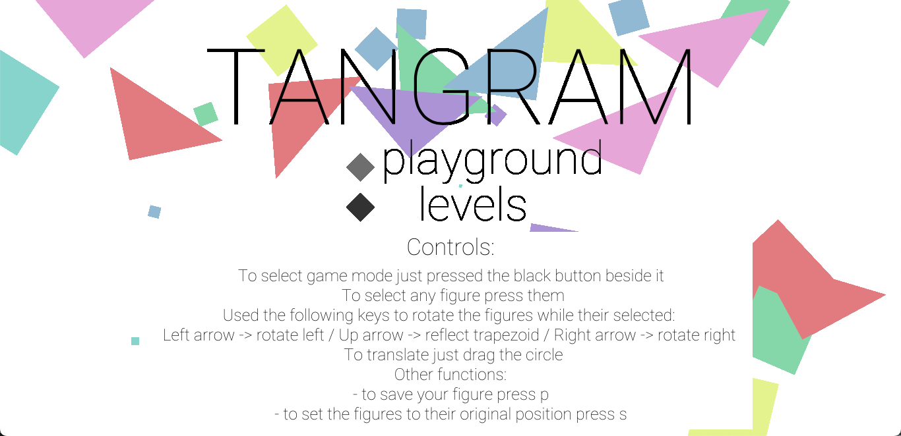

A lo largo de esta página, encontrarás una selección de mis proyectos básicos más destacados, cada uno diseñado para mostrar mis habilidades y conocimientos en un área específica de la programación. Para más detalles visitar mi perfil de GitHub
 Interfaz gráfica del Juego de Tangram que aplica conceptos de programación orientada a objetos en la herramienta P5.js. Implementa distintos modos de juego y se ejecuta en servidor local o en TangramOOP. Tiene 6 niveles de juego y cumple los siguientes puntos:
Interfaz gráfica del simulador del autómata celular ideado por Conway un juego de jugador cero con posible interacción del usuario. Realizado en la herramienta Processing con Python. Las siguientes reglas son aplicadas sobre el juego de la vida:
Interfaz gráfica que permite la carga de laberintos en formato CSV para su solución, implementando agentes basados en inteligencia artificial y haciendo uso de distintos algoritmos de búsqueda para encontrar y explorar la solución más óptima al laberinto cargado. Realizado en el lenguaje python con ayuda de Tkinter. Además cuenta con un notebook que invluye un análisis de cada algoritmo implementado (distintas heurísticas) en cuanto a tiempos de ejecución.
Sistema de gestión integral para la automatización de procesos y optimización de gestión de datos de un local ubicado en Villavicencio, Colombia. Este sistema incluye el diseño y la implementación de una base de datos en MySQL para almacenar y gestionar información relacionada con inventario, ventas, clientes y proveedores del negocio. Además, cuenta con su GUI utilizando React que permite al usuario interactuar de manera efectiva con la base de datos, facilitando tareas como consulta de productos y registro de ventas, entre otras.